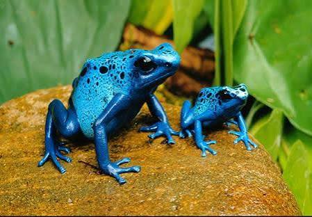
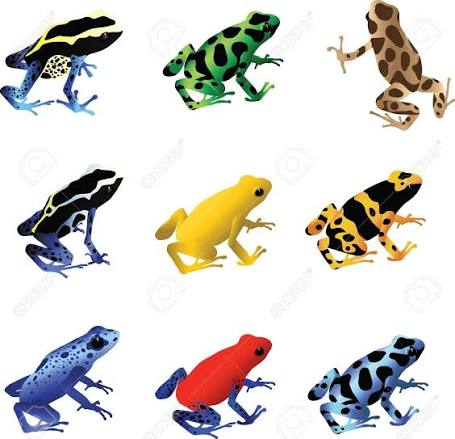
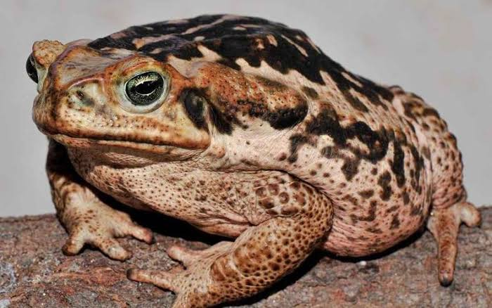

COLORIDO
Sapo Azul
Conhecidos por sua impressionante coloração azul, esses sapos são um dos exemplos mais fascinantes da diversidade dos anfíbios.
Saiba mais →Descubra espécies incríveis, curiosidades, características e fatos surpreendentes sobre esses pequenos habitantes da natureza.
Explorar o mundo dos sapos 🐸
Existem milhares de espécies de sapos espalhadas pelo planeta. Eles podem viver em florestas, rios, pântanos, desertos e até em ambientes urbanos.
Os sapos apresentam uma enorme variedade de cores, tamanhos e formas.
Conhecidos por sua impressionante coloração azul, esses sapos são um dos exemplos mais fascinantes da diversidade dos anfíbios.
Saiba mais →
Verde, amarelo, vermelho, azul e até combinações de várias cores. A natureza criou sapos com aparências surpreendentes.
Ver galeria →
O famoso sapo-cururu possui corpo robusto, pele cheia de detalhes e grandes glândulas localizadas atrás dos olhos.
Conhecer curiosidades →Eles são muito mais interessantes do que parecem!
Muitos sapos absorvem água através da pele, especialmente por uma região localizada na parte inferior do corpo.
Sapos ajudam a controlar populações de insetos e também fazem parte da cadeia alimentar de diversos animais.
Cores fortes podem funcionar como um aviso para predadores de que o animal pode ser tóxico ou desagradável.
Muitas espécies começam a vida como girinos e passam por transformações até chegar à fase adulta.
Algumas das incríveis formas e cores encontradas no mundo dos anfíbios.
Continue explorando e descubra como esses animais ajudam a manter o equilíbrio dos nossos ecossistemas.